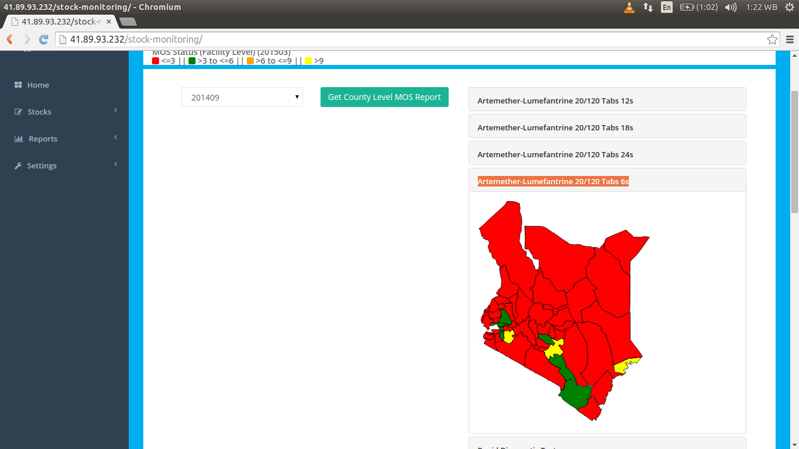

MOS Maps¶
MOS maps have been used to represent MOS status both at the county and national level.
red <=3 || green >3 to <=6 || orange >6 to <=9 || yellow >9
County Level MOS Report¶
MOS report is generated of each drug based on the period selected at the county level.
Artemether-Lumefantrine 20/120 Tabs 12s¶
Here is the screenshot of Artemether-Lumefantrine 20/120 Tabs 12s MOS report:
Artemether-Lumefantrine 20/120 Tabs 18s¶
Here is the screenshot of Artemether-Lumefantrine 20/120 Tabs 18s MOS report:
Artemether-Lumefantrine 20/120 Tabs 24s¶
Here is the screenshot of Artemether-Lumefantrine 20/120 Tabs 24s MOS report:

Artemether-Lumefantrine 20/120 Tabs 6s¶
Here is the screenshot of Artemether-Lumefantrine 20/120 Tabs 6s MOS report:

County level months of stock(MOS) chart¶
Charts of county level MOS are produced here as per the selected period
National Level months of stock(MOS) chart¶
Charts of level MOS are produced here.